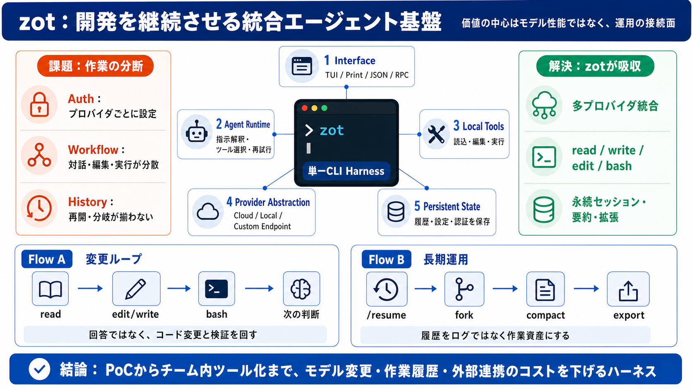

多プロバイダ統合
Anthropic、OpenAI、Gemini、Kimi、DeepSeek、Ollamaなどを共通のCLI操作へ抽象化する。

Coding agent harness
開発を動かす、統合エージェント基盤
多数のLLM、コード操作、セッション、拡張機能を単一CLIへ統合する。価値の中心は「賢い対話」ではなく、開発作業を継続できる運用設計にある。
The verdict
zotはプロバイダ、ローカル作業、履歴、外部連携を一つのハーネスに束ねる。PoCからチーム内ツール化までを見据えた設計である。
Anthropic、OpenAI、Gemini、Kimi、DeepSeek、Ollamaなどを共通のCLI操作へ抽象化する。
read / write / edit / bash を通じ、回答生成ではなくコード変更と実行まで委任する。
セッション復元、分岐、要約、拡張、指示層、障害回復を組み込み、反復開発を支える。
Why a harness
モデルごとに認証・操作・履歴・ツール連携が分かれると、切替実験そのものが開発コストになる。zotは差異をハーネス側へ吸収する。
Five connected layers
zotの構造は、利用画面だけでなくモデル接続、作業ツール、状態保存、外部拡張まで連続している。
Model optionality
共通インターフェースにより、モデル比較や障害時の切替を日常操作へ近づける。固定された一社APIへの依存を弱める設計である。
Cloud APIs
Anthropic、OpenAI、Gemini、Kimi、DeepSeekなど、複数系統を同じ操作へ集約。
Local Runtime
ローカルモデルも選択肢に含め、クラウド課金や接続条件と異なる運用を可能にする。
Custom Endpoint
互換APIや独自ゲートウェイへ接続し、社内経路や検証環境へ適応できる。
Model Catalog
モデル定義を拡張し、新しい選択肢をハーネスの管理対象として追加する。
効果は「最良モデルを自動的に選ぶこと」ではなく、モデル変更に伴う操作・接続コストを下げることにある。
One runtime, four surfaces
同じエージェント機能を、手動作業・単発実行・機械処理・外部制御に合わせて使い分けられる。
対話型の開発作業。モデル変更、履歴操作、ツール表示などをターミナル内で扱う。
非対話の単発実行。シェル処理や小さな自動化へ組み込みやすい。
--json で構造化出力を取得し、CIや後段プログラムへ渡す。
JSON-RPCを介して外部アプリ、SDK、botなどからエージェントを制御する。
From prompt to change
zotの基本単位はチャット往復ではない。コードを読み、差分を作り、実行結果から次の操作を決める反復である。
対象ファイル、設定、既存実装を読み、変更前の状態を把握する。
新規ファイルやまとまった内容を生成し、成果物として保存する。
既存コードへ局所的な修正を適用し、意図した差分に絞る。
テスト、ビルド、検索、診断を実行し、結果を次の判断へ戻す。
権限が大きいほど成果へ直結する一方、誤編集・コマンド実行・機密アクセスの影響範囲も広がる。利便性と隔離設計は同時に決める必要がある。
History as a workspace
再開、分岐、移動、共有を明示的な操作として備え、失敗や方向転換を前提とする開発プロセスを支える。
過去の作業状態へ戻り、別の日や別の端末から対話を継続する。
元の履歴を保ったまま仮説や実装方針を分岐し、比較可能にする。
会話内の位置や補足文脈を操作し、長いセッションの探索負荷を下げる。
セッションの持込み、持出し、分岐構造の確認により再利用性を高める。
Long-running work
コンテキスト上限は長期作業の構造的制約である。zotは手動圧縮と自動要約を備え、継続可能な状態へ戻す。
設計判断、ツール結果、修正差分がセッションへ蓄積する。
モデルのコンテキスト容量により、全履歴の保持が難しくなる。
利用者が必要なタイミングで会話を要約し、情報量を圧縮する。
超過時にも重要な文脈を短く引き継ぎ、作業継続を支援する。
要約は容量問題を解くが、細部を完全保存する仕組みではない。重要な仕様、承認事項、検証結果はリポジトリ文書や外部ログにも残すべきである。
Rules become reusable
AGENTS、SKILL、拡張機能を積み上げることで、品質基準・禁止事項・作業手順・外部接続を再利用できる。
Instruction Layer
リポジトリや作業範囲に応じた規約をモデル指示として定着させ、毎回の説明を減らす。
Reusable Practice
定型作業、専門知識、実行手順をスキルとして共有し、チーム内の再現性を高める。
External Surface
JSON-RPC、SDK、zotfile配布、botやTelegram連携へ広げ、単体CLIを内部基盤へ変える。
階層化はガバナンスに効く一方、個人・プロジェクト・組織ルールが衝突する可能性がある。優先順位、変更権限、監査方法を運用規程として固定する必要がある。
Swarm is concurrency
複数エージェントを別プロセスで走らせ、探索や分担を加速できる。ただし同じ作業ディレクトリを共有するため、競合管理が前提になる。
/swarm や auto-swarm は速度を上げ得るが、ファイル所有範囲、ブランチ戦略、最終承認者を先に決める必要がある。
Recover what can recover
rescue pickerと自動リトライは停止時間を減らすが、入力設計の誤りまでは直さない。運用では障害種別ごとの対応を分離する。
代替モデルへ移ると、能力・ツール仕様・料金・コンテキスト容量が変わり得る。回復後も出力の再確認が必要である。
Guardrails are not isolation
認証保護やjailは有効なガードだが、強制分離環境を保証しない。重要環境ではOSレベルの隔離と権限制限を追加する。
Credential Storage
認証情報をローカルへ保存し、0600相当の権限制御を意図する。端末自体の保護は別途必要。
Execution Guard
誤操作の防止に寄与するが、README上の位置づけは防止寄りであり、完全なサンドボックスではない。
Strong Isolation
機密データや本番資格情報を扱う場合は、Docker、VM、専用ユーザー、読取専用マウントを組み合わせる。
GitHub OAuth系のクライアントID再利用には利用規約と将来失効のリスクがある。安定運用では正式なAPIキーや承認済み認証方式を基本にする。
Free software, paid inference
zot本体は無料で利用できるが、クラウドAPI、並列実行、ログ管理、監査、保守には別の費用が発生する。
ツール自体の導入費ではなく、周辺運用と推論利用が主な費用品目になる。
モデル、トークン量、画像、コンテキスト、再試行に応じてプロバイダ料金が発生する。
並列数が増えるほど探索は速くなり得るが、API利用量も増える可能性が高い。
従量APIとは異なる一方、GPU、電力、保守、モデル品質を含む別のコスト構造になる。
Start narrow, then expand
初日から全機能を開放すると、操作負荷・権限・コスト・競合が同時に増える。最小構成を標準化し、観測結果に応じて拡張する。
対象リポジトリ、ネットワーク、保存先、ログ保持、機密区分を定義する。
認証、既定モデル、許可ツール、予算上限を絞り、基本ループを検証する。
AGENTSとSKILLに品質基準、禁止操作、レビュー条件を組み込む。
JSON、RPC、CI、bot、swarmは監査性と実測効果を確認して順次追加する。
Gate 01
差分レビュー、セッション追跡、バックアップ、権限剥奪が機能する。
Gate 02
モデル別利用量、再試行、並列実行をチーム単位で把握できる。
Gate 03
処理時間、エラー率、レビュー修正量、切替成功率を導入前後で測る。
The operating model matters
多プロバイダ、ツール実行、履歴、拡張性は強い基盤になる。一方で、権限・隔離・認証・ルール・コストの成熟度が、利便性を実務成果へ変えられるかを左右する。
No references found